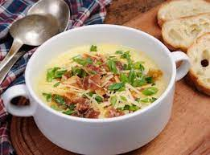

Crema de papa y tocino
Receta de una fantastica crema de papa con tocino. (La presentación es lo
que cuenta)

Ingredientes
- 300 g de papas peladas y en rodajas
- 60 g de tocino picado
- 100 g de cebolla en brunoise
- 5 g de ajo en brunoise
- 30 g de mantequilla
- 1 rama de tomillo fresco
- 2 hojas de laurel
- 100 ml de leche entera
- 250 ml de crema para batir
Elaboración (Pasos)
-
Caliente la mantequilla y acitrone en ella la cebolla, el ajo y el
tocino picado
-
Añada las papas, el tomillo, laurel, la leche y la Crema para batir.
Llévelo al punto de ebullición y manténgalo a fuego lento 20 minutos.
- Retire las hierbas de olor y licue perfectamente. Colar
-
Lleve del nuevo al punto de ebullición y sazone con el fondo de Pollo
- Colar la pasta
-
oner la pasta en la olla y agregar el tocino, el huevo, mantequilla y el
queso parmesano
- Revolver bien y servir caliente